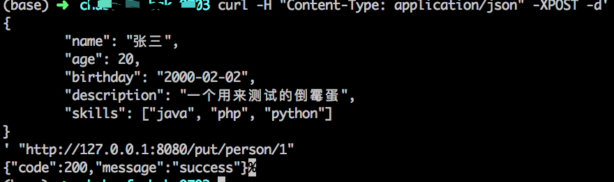
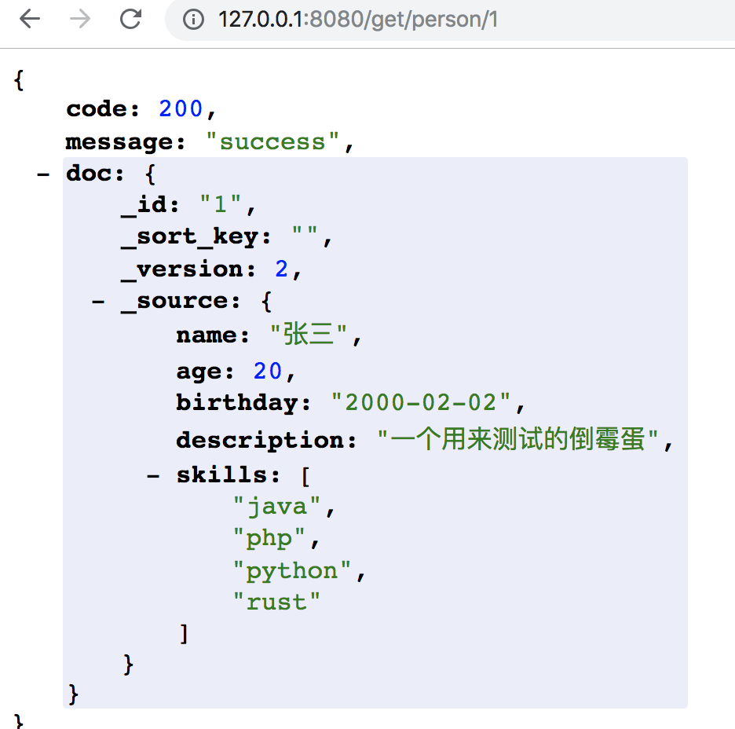
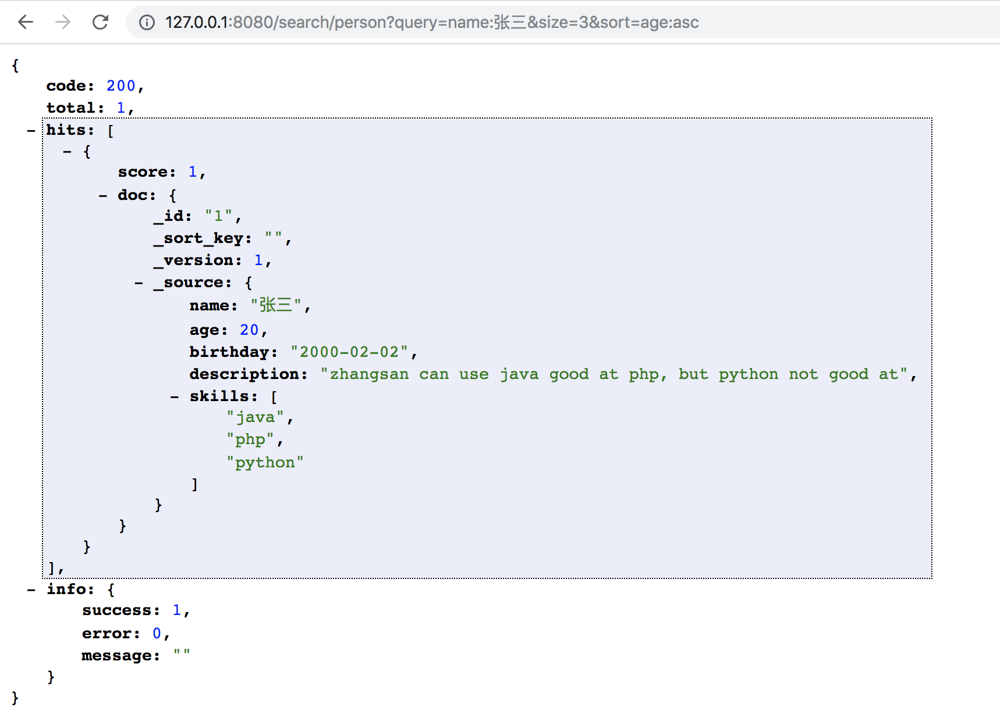
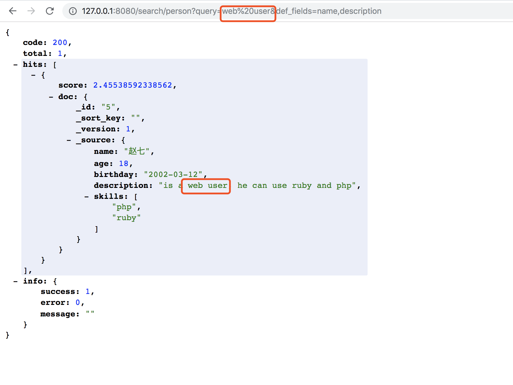
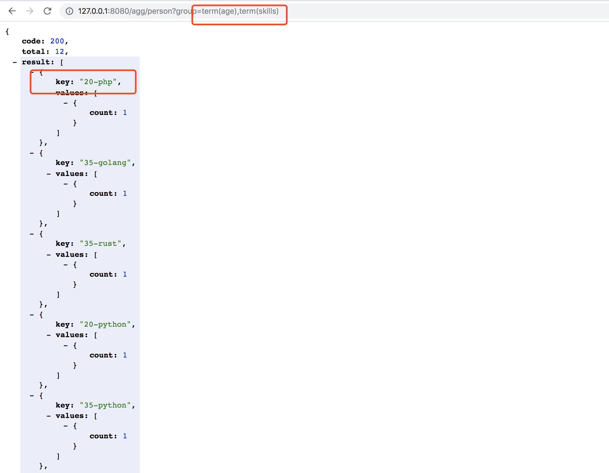

介绍
chubaodb 是一个分布式高可用的云原生，同时支持传统的分布式文档搜索及存储系统，支持全文检索,聚合查询,向量搜索,标量搜索的功能，采用轻schema策略，尽可能提高了存储文档的灵活度。同时吸取其他类似软件的经验，初心于在有限的计算节点情况下，支持不限容量的存储及计算，同时尽可能低的学习成本，完成尽可能多的需求。
初心
我们期望于chubaodb 是一个一看就会，开箱即用的软件，让使用者不在对被使用的软件所使用。严格准守，山寨三体的软件设计原则，
- 1.程序必须正确
- 2.程序必须可维护，如果和第1条冲突，以第1条为准
- 3.程序必须高效，如和第1条冲突，则以第1条为准，如和第2条冲突，则以第2条为准。
特点
graphql进行schema管理，restful api进行数据操作，raft保证数据的最终一致性，rocksdb,tantivy，faiss提供了底层存储及计算的能力。- 通过
chubaofs提供了无限存储的可能，通过架构可以释放或加载宝贵的cpu和内存资源。
编译与安装
chubaodb采用rust编写同时可能会依赖一些c库，支持跨平台编译，目前支持操作系统有 windows , linux , macos.可能还有其他不知道的，碰到再说。
| 共功能\系统 | windows | linux | macos |
|---|---|---|---|
| 存储 | 支持 | 支持 | 支持 |
| 全文检索 | 支持 | 支持 | 支持 |
| 向量检索 | 不支持 | 支持 | 支持 |
重点: 如果你之前没有rust环境，且对rust 没什么兴趣直接下载我们的release 版本。 (TODO: release连接)，珍爱生命远离rust编译
开始编译以在macos 下编译为例
- 在项目根目录执行
cargo build --release， - 如果运气好没有报错，那么进入
target/release目录获得编译好的二进制文件chubaodb - 执行 ./chubaodb
- 打开浏览器访问 http://127.0.0.1:8080 为router地址， 这个地址用来对数据进行CRUD
- 打开浏览器访问 http://127.0.0.1:7070 为master地址， 这个地址用来对库表及数据结构进行管理。
- 之后的章节会详细介绍这些地址的用法，如果一切顺利恭喜你，chubaodb已经在你的电脑中完美运行了。
配置文件
前面我们已经学会了，如果以最基本的方式启动chubaodb。下面我们来学一种非常高级的用法，通过配置文件和启动参数来启动chubaodb。在学这个之前我们可能需要了简单解下chubaodb的架构，chubaodb份了三个角色master,pserver,router.
- master 是集群管理，元数据管理的模块。表结构，数据均衡，failover 等
- pserver 是数据存储及计算节点。
- router 是提供了restful的数据查询组件。router 是无状态的。
下面是一个简单的config例子。也是默认config的参数
[global]
# the name will validate join cluster by same name
name = "chubaodb"
# your server ip for connect, you can use -i in rags to set it
# ip = "127.0.0.1"
# log path , If you are in a production environment, You'd better set absolute paths
log = "logs/"
# default log type for any model
log_level = "info"
# log file size for rolling
log_limit_bytes = 128000000
# number of reserved log files
log_file_count = 10
# Whether to use distributed storage. If it's true, there's only one
shared_disk = false
[router]
# port for server
http_port = 8080
[ps]
#set zone num, default is 0
zone = "default"
# you data save to disk path ,If you are in a production environment, You'd better set absolute paths
data = "data/"
# port for server
rpc_port = 9090
# how often to refresh the index
flush_sleep_sec = 3
[ps.raft]
heartbeat_port = 10030
replicate_port = 10031
# how size of num for memory
log_max_num = 200000
# how size of num for memory
log_min_num = 100000
# how size of num for memory
log_file_size_mb = 128
# Three without a heartbeat , follower to begin consecutive elections
heartbeate_ms = 500
[[masters]]
# master ip for service
ip = "127.0.0.1"
# port for server
http_port = 7070
# master data path for meta
data = "data/meta/"
可以发现我们把 三个模块写到了同一个配置文件。同时各个节点通过参数来选择启动的模块。实现了一个配置文件走天下的易用功能。
可以通过 ./chubaodb --help 获得参数说明
(base) ➜ release git:(async-std) ✗ ./chubaodb --help
chubaodb 0.1.0
hello index world
USAGE:
chubaodb [SUBCOMMAND]
FLAGS:
-h, --help Prints help information
-V, --version Prints version information
SUBCOMMANDS:
all
help Prints this message or the help of the given subcommand(s)
master
ps
router
启动可以通过 ./chubaodb all --help , ./chubaodb ps --help .....来获取更多。参数说明
- 比如我们想把三个模块在一个进程中启动 那么就是.
./chubaodb all -c ../../config/config.toml.
./chubaodb all -c ../../config/config.toml
load config by path: ../../config/config.toml
2020-07-15 11:05:39 - INFO - chubaodb::util::config(189) - log init ok
2020-07-15 11:05:39 - INFO - chubaodb(149) - All ChubaoDB servers were started successfully!
2020-07-15 11:05:39 - INFO - chubaodb::router::server(29) - router is listening on http://0.0.0.0:8080
2020-07-15 11:05:39 - INFO - actix_server::builder(262) - Starting 8 workers
2020-07-15 11:05:39 - INFO - chubaodb::util::http_client(21) - send get for url:http://127.0.0.1:7070/my_ip
2020-07-15 11:05:39 - INFO - surf::middleware::logger::native(119) - sending request
2020-07-15 11:05:39 - INFO - actix_server::builder(276) - Starting "actix-web-service-0.0.0.0:8080" service on 0.0.0.0:8080
2020-07-15 11:05:39 - WARN - isahc::handler(209) - request completed with error [id=AtomicCell { value: 0 }]: ConnectFailed: failed to connect to the server
2020-07-15 11:05:39 - ERROR - chubaodb::pserver::server(41) - got ip from master has err:Error(InternalErr, "ConnectFailed: failed to connect to the server")
2020-07-15 11:05:39 - INFO - chubaodb::master::server(43) - master listening on http://0.0.0.0:7070
2020-07-15 11:05:39 - INFO - actix_server::builder(262) - Starting 8 workers
2020-07-15 11:05:39 - INFO - actix_server::builder(276) - Starting "actix-web-service-0.0.0.0:7070" service on 0.0.0.0:7070
2020-07-15 11:05:40 - INFO - chubaodb::util::http_client(21) - send get for url:http://127.0.0.1:7070/my_ip
2020-07-15 11:05:40 - INFO - surf::middleware::logger::native(119) - sending request
2020-07-15 11:05:40 - INFO - chubaodb::master::server(440) - success_response [Object({"ip": String("127.0.0.1")})]
2020-07-15 11:05:40 - INFO - surf::middleware::logger::native(119) - request completed
2020-07-15 11:05:40 - INFO - chubaodb::pserver::server(36) - got my ip:127.0.0.1 from master
2020-07-15 11:05:40 - INFO - chubaodb::util::http_client(51) - send post for url:http://127.0.0.1:7070/pserver/register
2020-07-15 11:05:40 - INFO - surf::middleware::logger::native(119) - sending request
2020-07-15 11:05:40 - INFO - chubaodb::master::server(301) - prepare to heartbeat with address 127.0.0.1:9090, zone default
2020-07-15 11:05:40 - INFO - chubaodb::master::server(440) - success_response [PServer { id: Some(1), addr: "127.0.0.1:9090", write_partitions: [], zone: "default", modify_time: 0 }]
2020-07-15 11:05:40 - INFO - surf::middleware::logger::native(119) - request completed
2020-07-15 11:05:40 - INFO - chubaodb::pserver::service(111) - register to master ok: node_id:Some(1)
2020-07-15 11:05:40 - INFO - chubaodb::pserver::service(126) - register server line:PServer { id: Some(1), addr: "127.0.0.1:9090", write_partitions: [], zone: "default", modify_time: 0 }
2020-07-15 11:05:40 - INFO - chubaodb::pserver::server(59) - init pserver OK use time:Ok(5.333ms)
- 比如我们只启动 router 那么就是.
./chubaodb router -c ../../config/config.toml.
(base) ➜ release git:(async-std) ✗ ./chubaodb router -c ../../config/config.toml
load config by path: ../../config/config.toml
2020-07-15 11:01:59 - INFO - chubaodb::util::config(189) - log init ok
2020-07-15 11:01:59 - INFO - chubaodb(149) - All ChubaoDB servers were started successfully!
2020-07-15 11:01:59 - INFO - chubaodb::router::server(29) - router is listening on http://0.0.0.0:8080
2020-07-15 11:01:59 - INFO - actix_server::builder(262) - Starting 8 workers
2020-07-15 11:01:59 - INFO - actix_server::builder(276) - Starting "actix-web-service-0.0.0.0:8080" service on 0.0.0.0:8080
- 比如我们只启动 master 那么就是.
./chubaodb master -c ../../config/config.toml.
load config by path: ../../config/config.toml
2020-07-15 11:03:11 - INFO - chubaodb::util::config(189) - log init ok
2020-07-15 11:03:11 - INFO - chubaodb(149) - All ChubaoDB servers were started successfully!
2020-07-15 11:03:11 - INFO - chubaodb::master::server(43) - master listening on http://0.0.0.0:7070
2020-07-15 11:03:11 - INFO - actix_server::builder(262) - Starting 8 workers
2020-07-15 11:03:11 - INFO - actix_server::builder(276) - Starting "actix-web-service-0.0.0.0:7070" service on 0.0.0.0:7070
^C2020-07-15 11:03:12 - INFO - actix_server::builder(321) - SIGINT received, exiting
- 比如我们只启动 pserver 那么就是.
./chubaodb ps -c ../../config/config.toml. ps会通过你配置文件中master的配置自动去master 注册为数据节点
load config by path: ../../config/config.toml
2020-07-15 11:03:45 - INFO - chubaodb::util::config(189) - log init ok
2020-07-15 11:03:45 - INFO - chubaodb(149) - All ChubaoDB servers were started successfully!
2020-07-15 11:03:45 - INFO - chubaodb::util::http_client(21) - send get for url:http://127.0.0.1:7070/my_ip
2020-07-15 11:03:45 - INFO - surf::middleware::logger::native(119) - sending request
2020-07-15 11:03:45 - WARN - isahc::handler(209) - request completed with error [id=AtomicCell { value: 0 }]: ConnectFailed: failed to connect to the server
集群模式
编造ing......
元数据管理
元数据管理是在master api上，提供了graphql的方式。同时内置了一个iql。如果你没有对配置做过更改，master 的地址应该为 http://127.0.0.1:7070
打开地址你就看到如下

熟悉iql的就不解释了，不熟悉的用用就差不多。
我们简单说一下各个接口的功能，以collectionGet 为例，这个接口是获取一个表的结构， 点击右侧第二个方法。可以看到需要的参数

参数为，id ，name 。类型后门没有跟!意思就非必须字段。但是必须二选一。意味着你可以通过一个name 或者id 去查询这个collection.然后我们输入query
{
collectionGet(name:"t1")
}

可以看到报错了。没错。就是错了。因为我没还没有创建名字为t1的collection。后门会有创建的方式。那我们换一个简单的的吧。我们通过query来查询当前系统的版本。

红色部分为返回结果。太过简单就不解释了。
库表管理
下面我们会对创建表,查询表，删除表 进行演示。目前表结构一旦创建不支持修改。
打开master的管理地址 http://127.0.0.1:7070
创建表
通过 collectionCreate接口进行创建

- Name 是表名称，
- partitionNum 是这个表分多少个分片。分片多会提高插入的并发能力，但是会降低搜索效率，并非越多或者越少越好
- partitionReplicaNum 是每个分片多少个副本。建议要么1，要么3+ 。在传统分布式系统环境，可以设置为3，单机版智能设置1.partitionReplicaNum 必须小于等于你的机器个数
- Fields 是这个表里面的字段。我们提供了
int,float,string,text,vector,date几种字段格式，注意 text 和string的区别是。text是全文检索，比如中国银行搜索中国是会被召回的，string的话必须输入完整的 匹配。
下面我们创建一个人物表，包含 ID， 姓名， 年龄 ，生日 ， 简介 ，技能 几个字段，
mutation{
collectionCreate(
name:"person",
partitionNum:1,
partitionReplicaNum:1
fields:{
int:[{name:"age", value:true }]
string:[{name:"name" }, {name:"skills", value:true, array:true}]
date:[{name:"birthday", value:true }]
text:[{name:"description"}]
}
)
}

出现如下结构意味着创建表成功了。每种类型有自己的参数大家可以参阅iql的文档。
查询表

删除表

ok 你已经具备了元数据管理的基本技能。
数据操作
crud那些事儿
在库表管理里我们学习了如何创建一个表。下面让我们对这个表进行数据的增删改查。
在这之前我们了解下插入数据的姿势。
put代表不管有没有都插进去。document的version归为1create必须没有，如果有报错，document的version为1update必须存在，如果不存在就报错， document的version 递增+1upsert有则走update逻辑，没有则走create逻辑
好了你已经学会了存储的真谛，让我们来试着插入一条数据吧！注意数据操作是在 router 上进行，也就是默认的8080端口上。
put
curl -H "Content-Type: application/json" -XPOST -d'
{
"name": "张三",
"age": 20,
"birthday": "2000-02-02",
"description": "一个用来测试的倒霉蛋",
"skills": ["java", "php", "python"]
}
' "http://127.0.0.1:8080/put/person/1"
看到如下

代表插入成功！
http://127.0.0.1:8080/put/person/1地址中person是我们创建的表名称， 1 位当前用户的唯一id。字符串格式。（ps:id 还有一种方式，双keyid。这是一种很高级的做法，后门我们会对次情况单门一章来说明）
我们可以通过get 接口来获取这条数据 http://127.0.0.1:8080/get/person/1

update
比如我们尝试更新张三的技能增加rust 通过如下方式
curl -H "Content-Type: application/json" -XPOST -d'
{
"skills": ["java", "php", "python","rust"]
}
' "http://127.0.0.1:8080/update/person/1"

我们可以开心的看到张三学会了rust 并且 version 改为了2.
delete
通过
curl -XDELETE http://127.0.0.1:8080/delete/person/1
{"code":200,"message":"success"}
可以删除张三这条记录。我们看看删除后再做get会得到什么

嗯。很好本章结束了！
搜索那些事儿
下面我们来介绍一下chubaodb的搜索功能，在这之前，你确信已经通过库表管理创建了表。
我们先插入一些测试数据吧，先创建5个人
curl -H "Content-Type: application/json" -XPOST -d'
{
"name": "张三",
"age": 20,
"birthday": "2000-02-02",
"description": "zhangsan can use java good at php, but python not good at",
"skills": ["java", "php", "python"]
}
' "http://127.0.0.1:8080/put/person/1"
curl -H "Content-Type: application/json" -XPOST -d'
{
"name": "李四",
"age": 30,
"birthday": "1990-02-02",
"description": "lisi can use java ,only java",
"skills": ["java"]
}
' "http://127.0.0.1:8080/put/person/2"
curl -H "Content-Type: application/json" -XPOST -d'
{
"name": "王五",
"age": 20,
"birthday": "2000-03-20",
"description": "wangwu is c++ rust good at!",
"skills": ["c++", "rust"]
}
' "http://127.0.0.1:8080/put/person/3"
curl -H "Content-Type: application/json" -XPOST -d'
{
"name": "牛六",
"age": 35,
"birthday": "1985-12-02",
"description": "niuliu age too old",
"skills": ["java", "golang", "python", "rust"]
}
' "http://127.0.0.1:8080/put/person/4"
curl -H "Content-Type: application/json" -XPOST -d'
{
"name": "赵七",
"age": 18,
"birthday": "2002-03-12",
"description": "is a web user, he can use ruby and php",
"skills": ["php", "ruby"]
}
' "http://127.0.0.1:8080/put/person/5"
插入完成后，我们通过search接口可以查看到这五个人 http://127.0.0.1:8080/search/person

http://127.0.0.1:8080/search/person` 参数为空时语义为query:* search 又如下参数
- query 查询语句，也就是类似lucene 的dsl 。（TODO： 专门一章介绍dsl）
- def_fields 默认查询字段。当query不指定字段时候以此字段为查询，为or的关系，可以多个字段用逗号
,隔开 - size: 返回数据条数，默认为20
- sort: 排序规则 example：name:asc|age:desc , 默认为score排序也就是相关度
下面我们把这些query 都用上做一个查询吧！
http://127.0.0.1:8080/search/person?query=name:%E5%BC%A0%E4%B8%89&size=3&sort=age:asc

下面让我们自举一些需求。
查找摘要中 包含 rust 或者 java 的人
http://127.0.0.1:8080/search/person?query=description:java%20OR%20description:rust&size=3&sort=age:asc- 上述语句等同于
http://127.0.0.1:8080/search/person?query=java%20OR%20rust&def_fields=description&size=3&sort=age:asc

查找摘要中 包含 java 的人 按照年龄倒序
http://127.0.0.1:8080/search/person?query=java&def_fields=description&size=3&sort=age:desc

精确查找
在用户名或者摘要中查找 web user 为关键字的用户。

聚合那些事儿
下面我们来介绍一下chubaodb的聚合功能，在这之前，你确信已经通过库表管理创建了表。
我们先插入一些测试数据吧，先创建5个人
curl -H "Content-Type: application/json" -XPOST -d'
{
"name": "张三",
"age": 20,
"birthday": "2000-02-02",
"description": "zhangsan can use java good at php, but python not good at",
"skills": ["java", "php", "python"]
}
' "http://127.0.0.1:8080/put/person/1"
curl -H "Content-Type: application/json" -XPOST -d'
{
"name": "李四",
"age": 30,
"birthday": "1990-02-02",
"description": "lisi can use java ,only java",
"skills": ["java"]
}
' "http://127.0.0.1:8080/put/person/2"
curl -H "Content-Type: application/json" -XPOST -d'
{
"name": "王五",
"age": 20,
"birthday": "2000-03-20",
"description": "wangwu is c++ rust good at!",
"skills": ["c++", "rust"]
}
' "http://127.0.0.1:8080/put/person/3"
curl -H "Content-Type: application/json" -XPOST -d'
{
"name": "牛六",
"age": 35,
"birthday": "1985-12-02",
"description": "niuliu age too old",
"skills": ["java", "golang", "python", "rust"]
}
' "http://127.0.0.1:8080/put/person/4"
curl -H "Content-Type: application/json" -XPOST -d'
{
"name": "赵七",
"age": 18,
"birthday": "2002-03-12",
"description": "is a web user, he can use ruby and php",
"skills": ["php", "ruby"]
}
' "http://127.0.0.1:8080/put/person/5"
插入完成后，我们通过search接口可以查看到这五个人 http://127.0.0.1:8080/search/person
我们先了解下聚合的真谛。 我们从一句大家都熟悉的sql 入手吧
select age,count(age) from person group by age
这个聚合函数可以堪称两个部分。分别是 group by 分组，和 count(*) 指标连个部分。所以聚合份两种，一个是分组，一个和统计。
ok，现在让我们看看在chubaodb中这两部分是如何完成的。我们通过一个例子入手
http://127.0.0.1:8080/agg/person?group=term(age)&fun=stats(age)
- agg 是方法的操作
- group= 是聚合方法。例子中我们用的term 方式进行分组。
- fun = 是指标方法。例子中我们统计 max ，min 等

好的恭喜你已经看到结果了。默认是按照value中的count 进行排序
目前group 支持的方法有
term(name) 按照字段进行聚合
date(name,format) example: date(birthday, yyyy-MM) 按照时间格式进行聚合
range(name, range_str) example:range(age,-0,0-20,20-30,30-40,40-)
Fun 支持的方法有
hits(size):每个分组中返回size个文档，无排序功能
stats(name): 每个分组中，count max, min , sum missing 的个数
- fun 可以为空，如果为空则默认为count方式
现在让我们自举一些例子：
按照年龄分组，分别显示每个年龄中的人

照技能分组，显示每个技能的人数
http://127.0.0.1:8080/agg/person?group=term(skills)

按照技能分组，显示每个技能的人数,按照技能名称排序
http://127.0.0.1:8080/agg/person?group=term(skills)&sort=key:asc

按照年龄和技能分组查看人数
